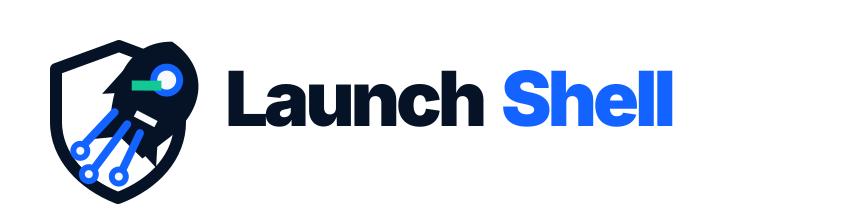
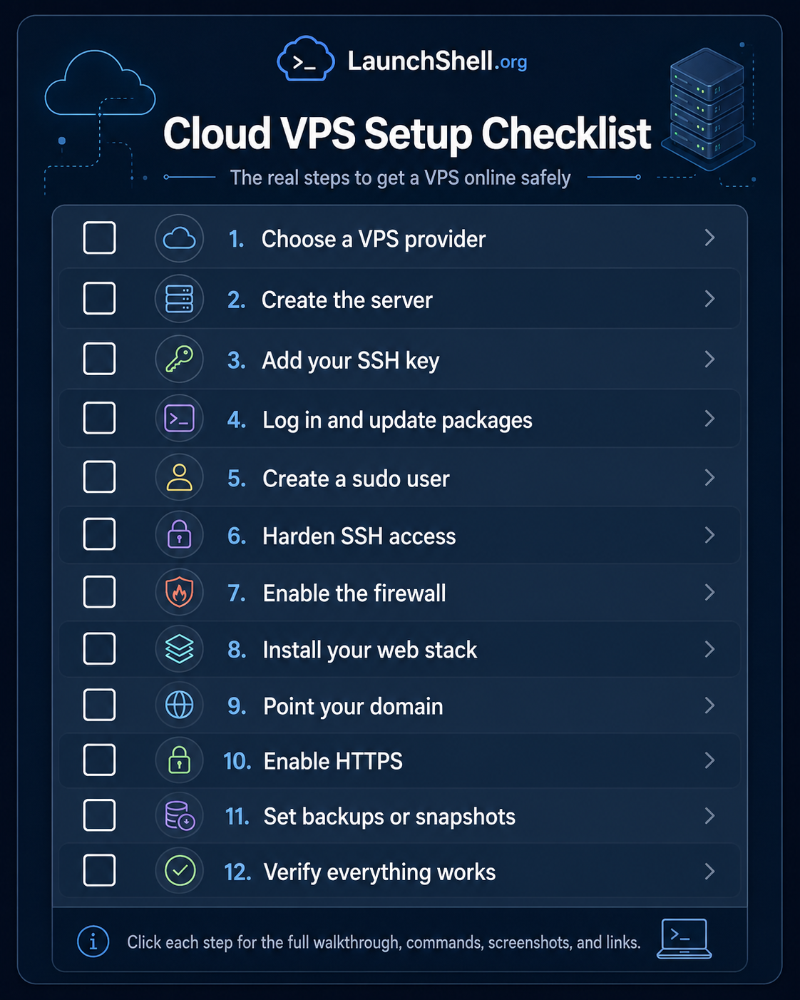

Seed App
A Flask web app project for learning routes, templates, JSON data, Git, deployment, Nginx, Gunicorn, systemd, and server troubleshooting.

LaunchShell is a student-built project journal and tutorial site for learning real technical skills through practical builds.
The first guides will document projects like VPS Linux web servers, Raspberry Pi labs, Seed Web App, GitHub Codespaces workflows, backups, snapshots, and safe beginner cybersecurity habits.

These are not fake portfolio pieces. They are practical projects built to teach how systems work, how mistakes happen, and how to recover when something breaks.
A Flask web app project for learning routes, templates, JSON data, Git, deployment, Nginx, Gunicorn, systemd, and server troubleshooting.

A hardware learning project for understanding binary, logic gates, registers, clock signals, control lines, debugging, and how computers actually compute.

A meta-project showing how LaunchShell itself was created, versioned, deployed, backed up, tested, broken, fixed, and improved over time.
The site is built around the way technical skills are actually learned: make something real, back it up, change it, break it safely, restore it, and document what happened.
Use what you have: a Raspberry Pi, Codespace, VM, old laptop, or small VPS.
Make a real thing first: a web app, server, circuit, script, or lab.
Back up before risky changes. Learn Git, exports, images, and restore points.
Use logs, errors, configs, and history to understand what actually happened.
You do not need a perfect lab or expensive equipment. The first tutorials focus on practical setups that are realistic for students.

Small Linux machines are useful for learning SSH, services, networking, automation, sensors, and home lab basics.

A browser-based coding environment for learning Git, Linux commands, project structure, web development, and repeatable workflows.

A small cloud server can teach Linux administration, DNS, firewalls, HTTPS, logs, backups, and deployment.
The first release is intentionally simple: a homepage, project previews, and then step-by-step pages as the tutorials are written.